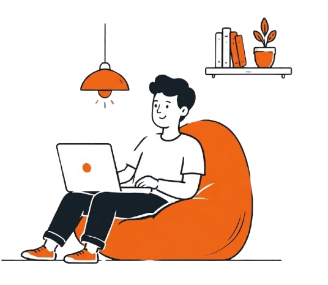

Kosovych Iwan
Junior Frontend DeveloperЯ створюю сайти через коди html і также їх стилізую через css i інші види также роблю анімації та багато іншого

Мої навички
- html
- css
- scss
- boostrap
- telewind
mar 2 2025
Lumen
Адаптивна головна сторінка з hero-секцією, навігацією та блоком «Featured Movie» з рейтингом, описом і кнопками дій. Створено на HTML та CSS за макетом із Figma, з акцентом на темний кінематографічний стиль і читабельну типографіку.
view projectmar 2 2025
Solarium
Стильна головна сторінка в естетиці Y2K з навігацією, кнопкою «Join the club», великим заголовком із градієнтним акцентом і фото-композицією з моделлю та кросівками. Створено з акцентом на виразну типографіку, теплу коричнево-жовту палітру та сучасний дизайн із заокругленими блоками й повʼязаним розташуванням елементів.
view projectmar 2 2025
FoodDash
Яскрава головна сторінка з пошуком страв, кошиком, hero-блоком, статистикою (500+ ресторанів, 30 хв, рейтинг 4.9) та кнопками швидкого замовлення. Створено з використанням Tailwind CSS, з акцентом на адаптивну верстку, теплий помаранчевий градієнт і зручний інтерфейс.
view projectmar 2 2025
unicorn
Він не є глобальним проектом це мій перший проект і вирішив що йому тут місце він на чистому html де є цікава інформація про єдинорогів
view project